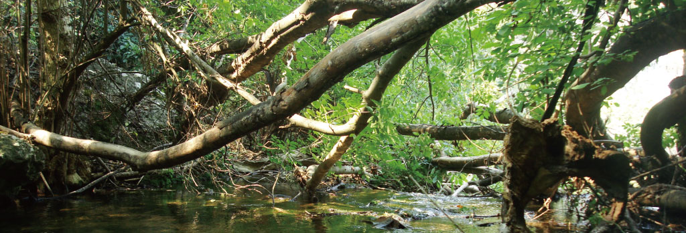
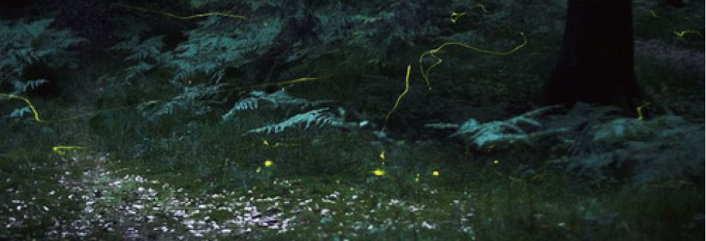
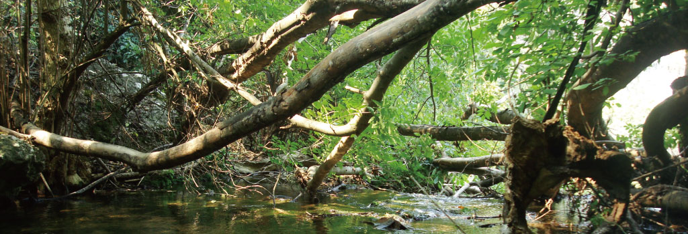
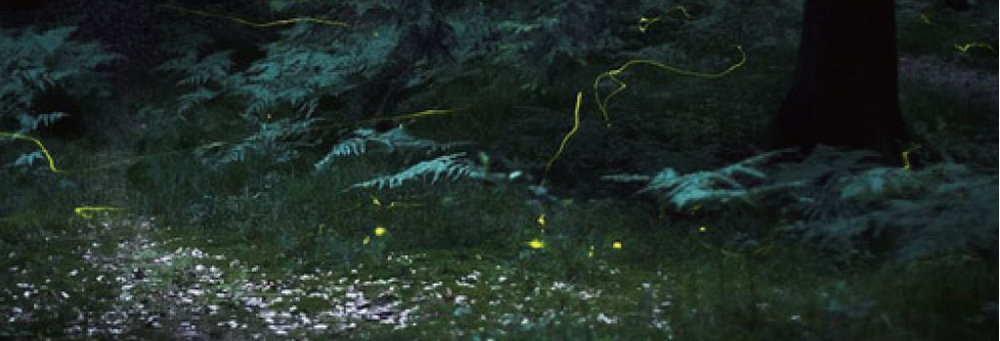
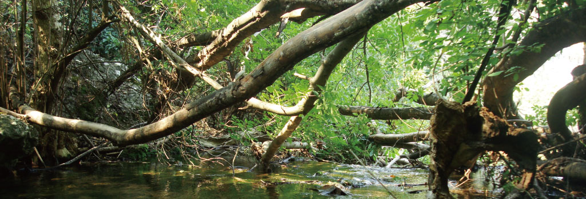
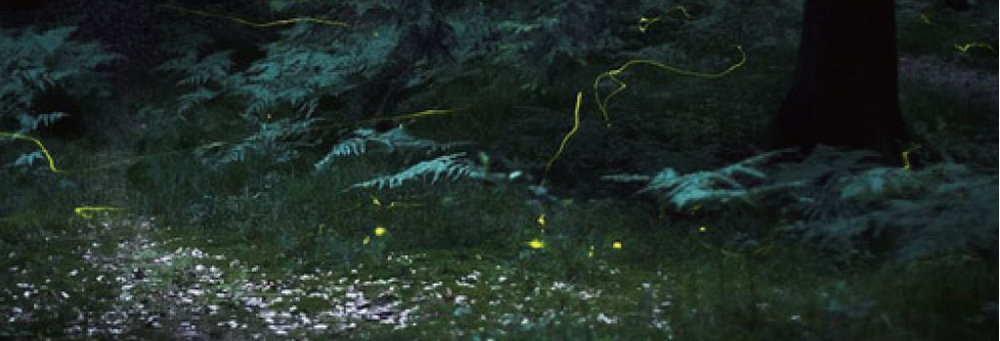
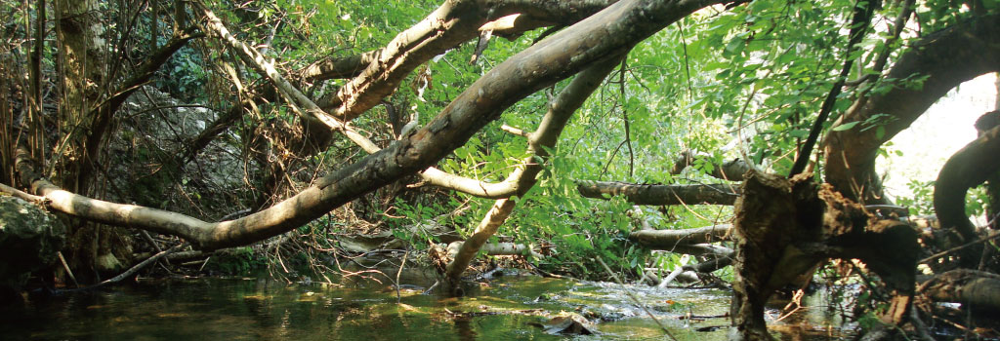
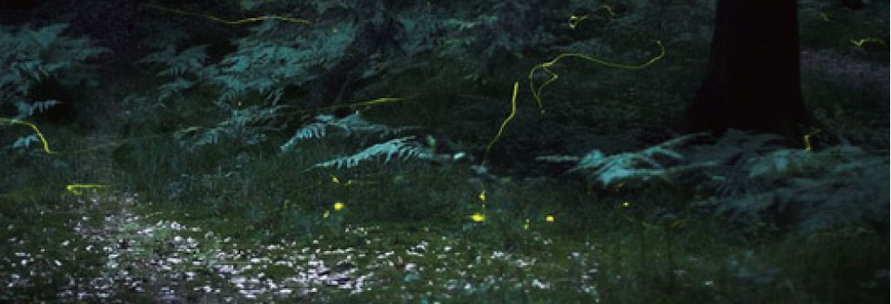
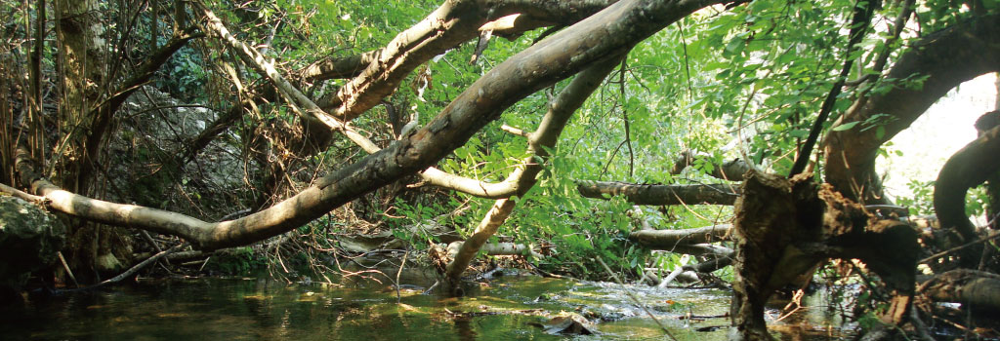
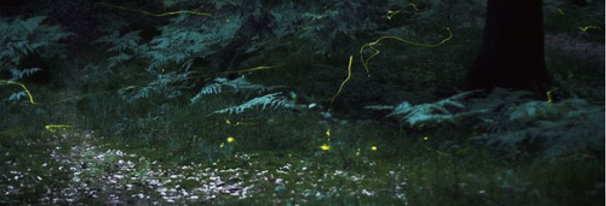
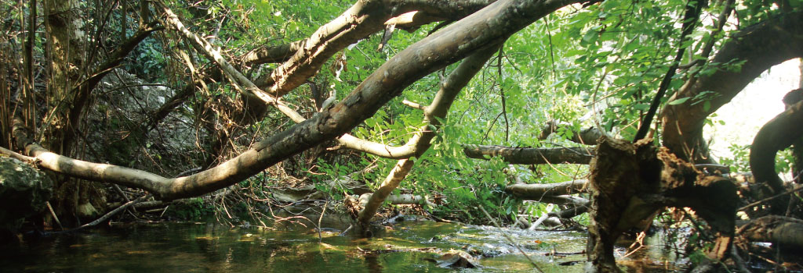
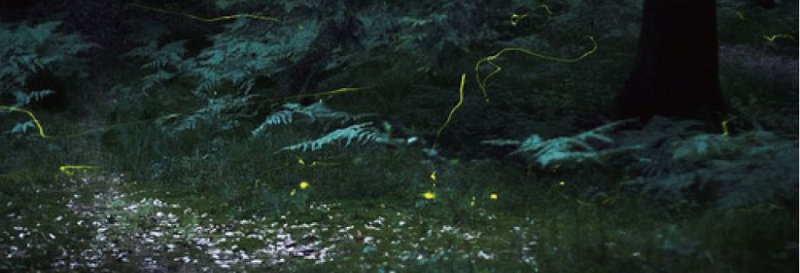
園内植物ページでは、小川の近くに生息する植物の紹介をしています。

落葉性の高木で、大きいものは15mに達する。樹皮は灰色を帯びる。葉は薄く、つやのある黄緑色で、縁にはあらい鋸歯がある。
高さは20m以上、幹の直径は1m以上になる。樹皮は淡灰褐色で、表面は平滑だが樹齢に伴ってすじや割れ目が生じ、老木では樹皮が剥がれてくる。
文字通り樹皮が赤いのでこの名が付いている。クロマツと非常によく似ているが、葉がやや細く柔らかく、手で触れてもクロマツほど痛くない。
落葉性高木で、高さ17m、幹の直径は80cm、あるいはそれ以上になる。樹皮は灰色で厚く、縦に深い裂け目を生じる。
樹高は20m、直径1mに達する。木材は建築や楽器の材料としても用いられる。
米国中部原産で、落葉半つるである。開花期は5月下旬から6月で、 結実期は7月から8月上旬である。果実は食べることも出来る。